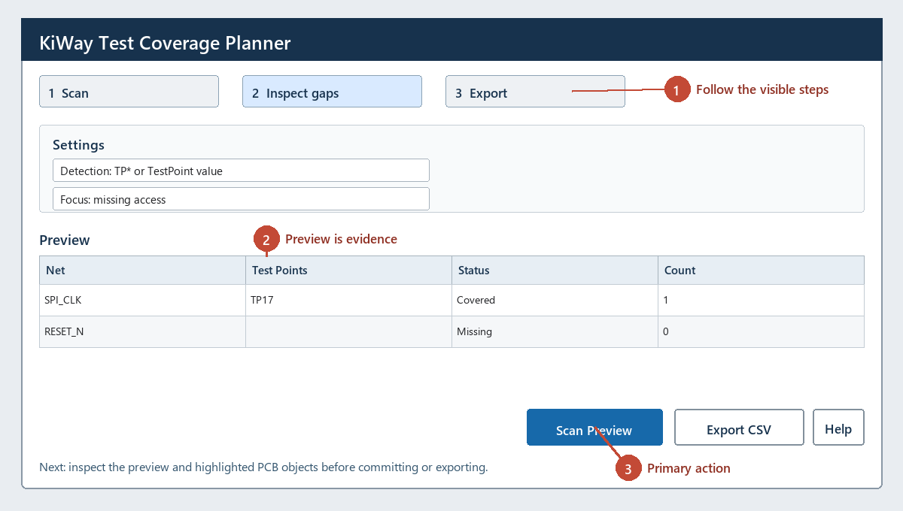

The numbered cues below match the visible workflow in the plugin. A preview is the review evidence; committing or exporting is the final step.

Reports every named board net and whether it is accessible through a test-point footprint.
| Status | Detection | Action |
|---|---|---|
| Covered | One or more footprint references start with TP, or values contain TESTPOINT. | Verify physical access and probe clearance. |
| Missing | No detected test point is assigned to the net. | Add a test point or document why coverage is not required. |
Coverage is electrical-net coverage only; it does not prove fixture reachability, probe force, or simultaneous-test compatibility.